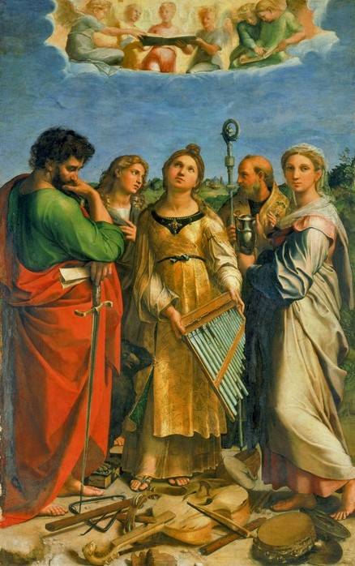
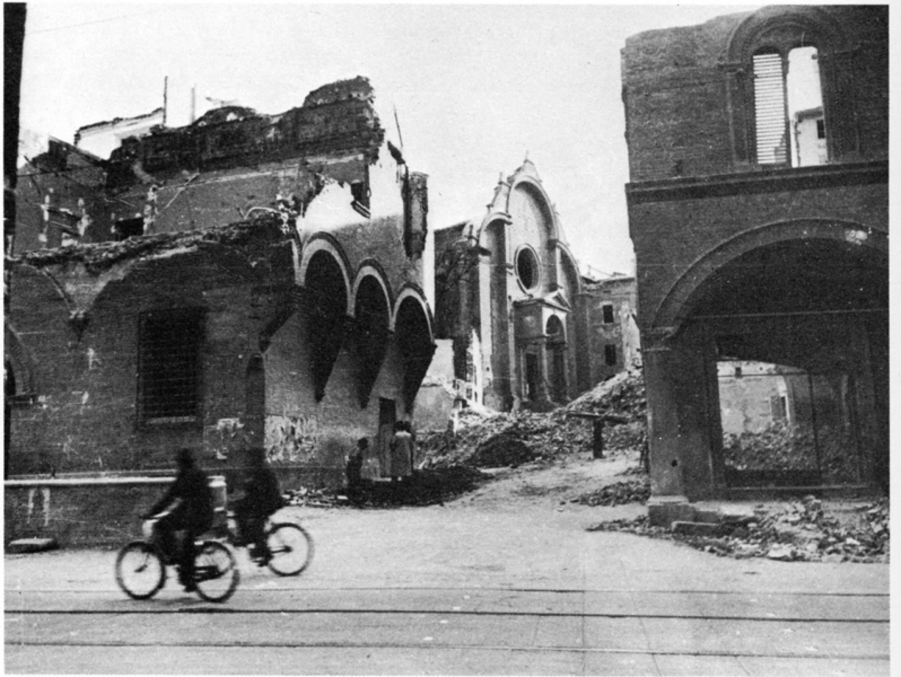
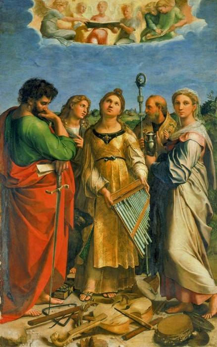
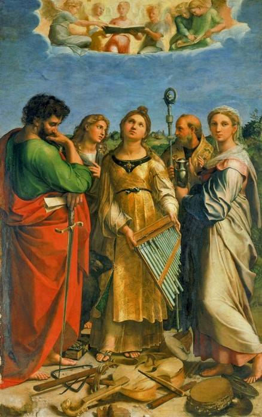
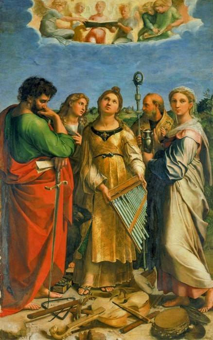
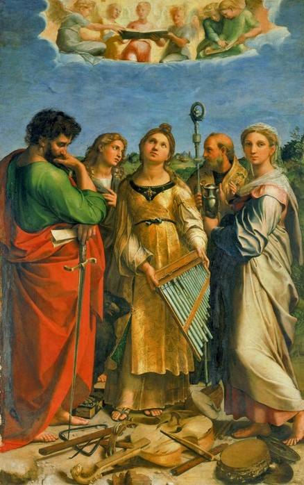

Home
Progetto
Catalogo
Lista
Tipologia
Persona
Data
Itinerari
Cerca
Home
Lista
Lista
Filtra per:
Tipologia
Fonti
Dipinti
Disegni
Incisioni
Stampe
Fotografie
Persona
San Petronio
Raffaello
Fratelli Alinari
Marcantonio Raimondi
Pio Panfili
Girolamo da Treviso
Alberto Bacchi della Lega
Pietro Poppi
Data
1515-1516
1518
1520-1525
1793
1879
1904
1926
1944
1947
Supporto
Immagini
Testi


«
1
2
3
4
5
6
»
 


 
